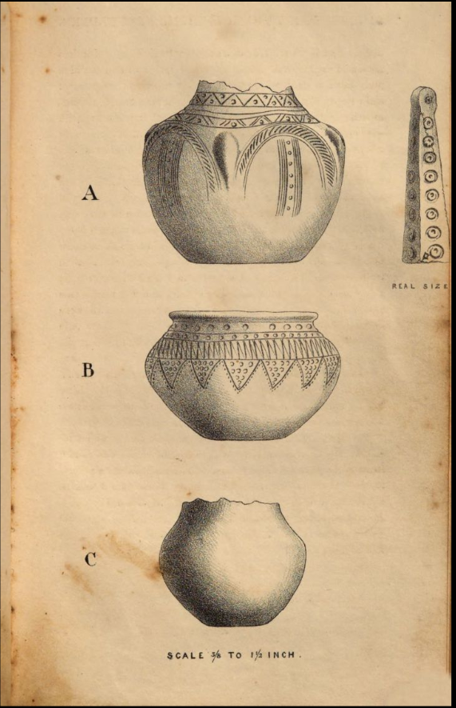

SOULDERN, anciently called Sulthorn, is a parish in the Hundred of Ploughley, Deanery and Union of Bicester, Diocese and County of Oxford; it is five miles north-east of Steeple Aston. The living is a rectory, rated at £8 14s. 2d., gross income £480. The tithes were commuted in 1839, the aggregate amount £418 3s. Od. The present patrons are the Master and Fellows of St. John's College, Cambridge. There are a day and Sunday School endowed with £6 per annum. Poor-rates in 1838, £157 14s. Od. Acres 2270. Houses 116. Assessed property £2877. Population in 1801, 394—in 1831, 599a.
The Church is dedicated to St. Mary. The early Norman Tower remains, having walls of great thickness, but it inclines far from the perpendicular: the Nave has a Clerestory, and is parted from the South Aisle by three pointed arches resting on round colums; the nave and aisle retain some ancient carved seats. Some of the windows of the aisle are elaborate and curious specimens of early Decorated work. The Porch, and the aisle to which it opens, have each a pointed arched doorway, without capitals to the jambs, the labels terminate in heads. The Chancel is modern and badb. It was rebuilt in the time of the last Rector but one, a clergyman of more celebrity as a Commissioner of Inclosure Acts than in his own profession. In 1184, Hugh Bishop of Lincoln, confirmed a grant of this Church made by Jordan de Sai to Ensham Abbeyc; the Bishop reserved a pension of two marks of silver to the monks from the revenues of the Churchd. In the reign of Henry III., Robert de Hay, Rector of Sulthorn, claimed from the Abbot and Convent of Oseney, a certain measure of corn for their demesne at Mixbury, and fourpence yearly for their demesne of Fulwell, by virtue of an old custom called “Chirchscete,” and agreed, with the consent of the patrons, to receive a yearly pension of five shillings in full satisfaction for the said corn and moneye. There was a hide of land at Fritwellf, called Sulthorn hide, the tithes of which were claimed by the Rector of Sulthorn; a controversy arising, the Canons [of St. Frideswide, I presume,] appealed to Pope Gregory the Ninthg, who delegated the trial to the Priors of St. John and St. James, and the Dean of Northampton; they gave it in favor of the Canons, but the controversy was tried three several times, and at last it was agreed that the Rector of Sulthorn should have the tithes of the said hide of land, but pay two shillings a year to the Priory. This dispute led to the excommunication of Stephen, parson of Fritwell, by sentence of the Pope, whose submission, after two years, was testified by the Prior of Brackley and the Rector of Aynho. About 1270, Philip Basset sold the Manor of Sulthorn to Ralph Bray for forty marks of silverh. In 1277, Ensham Abbey had a yearly pension of one hundred shillings from this livingi. In 1305 a trial took place in the Court of King's Bench as to the right of patronage of this Church, between Thomas Abbot of Ensham, and Lucy widow of Thomas de Leuknore and Peter de Schevyndon, the living being then vacant by the death of John de Bernewell, The Abbey gained the cause with ten marks damagesj.
William Duke of Suffolk, slain in 1449, held jointly with Alice his wife, lands in this parish.
There is extant a list of twenty-eight Rectors presented by Ensham Abbey, commencing in 1186 and extending to 1530. After the Dissolution, Edward Yonge was presented in 1562 by William Holte, gentleman; and in 1571, Laurence Giles, by Hugh Throgmorton, of Souldern, Esquire.
The reports of the Commissioners of Charities contain some interesting particulars as to Souldern.
In Mr. Beesley's “History of Banbury,” p. 36-38, is an account of the line of the Portway in the vicinity of Souldern, and mention made of skeletons discovered in Aynho Park, which lies close on the north side of the brook which divides the two parishes, and reaches to within about half a mile of Souldern village. Antiquaries are not agreed as to the extent and exact line of the Portway, but its average course is probably about north and south, and it certainly passed close to Aynho and Souldern. South Northamptonshire and the adjoining part of Oxfordshire was cultivated in very early times, and in consequence there are very few visible remains of the Britons or Romans, but numerous remains of those nations have been at different times discovered by the spade in this district.
In January, 1844, having heard that remains had been recently discovered at Souldern, I visited the spot, which is a garden on the west side of the narrow road, leading out of the main street of Souldern, down the hill, southward. The ground falls from the garden on all sides but the west. A skeleton and urn (A) were discovered by workmen who were digging stone, from whose information and a compass I made out their relative position. The soil was about two feet thick on a deep rock of limestone. The skeleton was of man's stature; judging by the teeth about thirty or thirty-five years of age, stretched out at full length on its back, W. by S. and E. by N., head to the former. The rock was hollowed out to receive it, the bones being three feet under the surface. On its right hand side of its head lay a pair of bone ornaments two inches long, in shape four sided-cones, having on each side nine small engraved circles. At the small end of each is inserted an iron rivet, which is probably the remains of a hook for suspension, perhaps from the ear, by another brass ring. About the head were many fragments of thin brass,* which when collected and put together form parts of two bands, the first of which is seven inches long and three-fourths wide, and has encircled the lower part of a leathern skull cap. The edges of the leather and of this brass band were held together by a thin concave brass binding, in the hollow of which fragments of leather are still to be seen. On each side of the helmet, attached to the brass band, was an ornamental hinge for a chin strap.
Of the other band about one foot five inches are existing, the whole of which is of equal width and one-eighth narrower than the first. It was probably the binding of the edge of the helmet where there would be a seam, or intended to encircle the helmet close above the other binding. On both these bands are rivets, which shew that the leather rivetted was three-sixteenths thick. Nothing else, according to my informants, was found with the skeleton. About seven feet north of its head was found an urn (A) containing bones; about the same depth under the surface as the skeleton. The urn was in fragments when discovered but has since been restored. It is of rather coarse black pottery, averaging about three sixteenths of an inch in thickness, and imperfect in the lip. What remains is seven and three quarters inches high and eight and three quarters inches in diameter. It is ornamented on the upper part by two horizontal bands of dancetted pattern. At about twothirds up the sides are four roundish projections at equal distances from each other and between them semicircular bands of ornament.
About five feet E. by S. from the urn and eleven feet from the head of the skeleton, they found a number of bones in a heap, which they thought had been moved before. These were probably the remainder of a body or bodies, of which parts were inclosed in one or all of the three urns.
The workmen soon stopped digging, but some months afterwards began again to get stone in the same garden, and found about two and a half feet below the surface two more urns (B,C). The first contained fragments of bones. It is five and a half inches high and eight and a half inches in the widest diameter; composed of light grey pottery, and very thin, and great part being only oneeighth of an inch thick. The ornamental work on it is very slight, (see plate) of which the chief part is dancetted pattern, each triangle being filled with from nine to thirteen small circular indentations.
The other urn (C) was imperfect in the upper part, and probably was fractured when interred, for it contained the skull of an infant of a few days old, which was too large to have been admitted through the mouth of the urn. Many sepulchral urns have been discovered, evidently fractured before interment, containing bones too large to have been passed through the mouth; and occasionally the vessels have been joined together again, after the insertion of the bones. This urn is five and a half inches high (the lip being lost) and six and a half inches in its widest diameter (see plate). It is of black pottery, about a quarter of an inch thick, and destitute of ornament.
None of the urns were protected by stones or tiles from the pressure of the earth.
About twenty-five feet W. by N. of the skeleton was found a skeleton several years ago; and about 1840 “some things” were found about thirty or forty feet N.E. of the skeleton. I was unable to learn any further particulars of those discoveries.
The skeletons discovered north of Aynho village lay N. and S., but we are not informed to which point the heads were laid.* Most of the skeletons found in these parts, accompanied by pottery of this class, have had the heads between S. and W. From the pottery found at Souldern, I am inclined to attribute these remains to the Romanized Britons of the fifth or sixth century, but in the opinion of some antiquaries they belong to the Saxons of the eighth century.
The three urns, brass straps, and one of the two bone ornaments, are now in my possession; having been given to me by the Rev. Dr. Stephenson and others.
H. DRYDEN, 1845.
